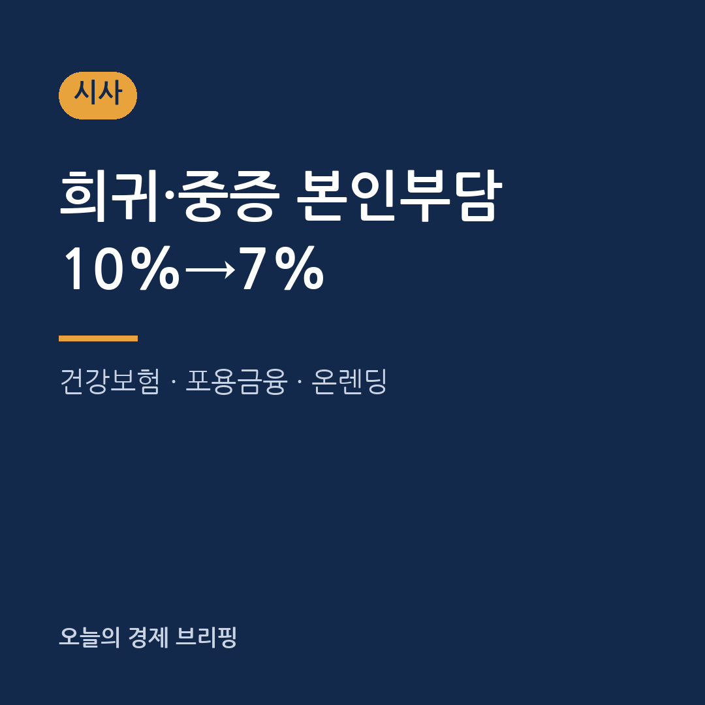
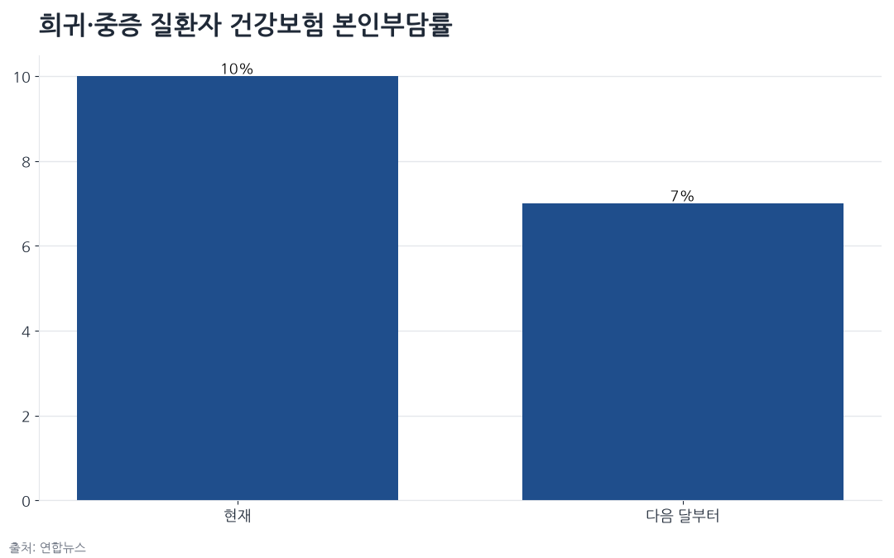

2026-11-26-1139-naver 발행 키트 · 이 페이지는 검색에 노출되지 않습니다.
제목
카테고리
시사태그
본문 (그림·표 포함)
휴대폰 블로그 앱에서는 그림이 같이 붙지 않을 수 있어요. 그때는 [글자만 복사] 후 아래 이미지를 저장해 [그래프1]·[표1] 자리에 첨부하세요.
병원비 걱정, 대출 이자 걱정이 한꺼번에 몰려오는 연말이죠. 오늘은 그런 분들 지갑에 직접 닿을 만한 소식 두 가지를 골라 봤어요.

▶ 희귀·중증 질환, 다음 달부터 내는 비율이 줄어요
이재명 대통령이 26일 직접 밝힌 내용이에요. 다음 달부터 희귀·중증 질환자의 건강보험 본인부담률이 10%에서 7%로 낮아진다고 해요.
본인부담률(진료비 중에서 환자가 직접 내는 몫의 비율)이 3%포인트 내려가는 거라, 치료를 오래 이어가는 분들은 병원 창구에서 내는 돈이 그만큼 가벼워지겠죠.

다만 어떤 질환이 정확히 해당되는지, 병원에서 어떻게 적용되는지는 제가 확인한 자료에는 나오지 않았어요. 가족 중에 해당될 만한 분이 계시면 진료받는 병원 창구나 정부 공식 안내로 꼭 확인해 보세요.
▶ 은행 돈이 저축은행을 거쳐 중저신용자에게 가요
금융위원회가 제8차 포용적금융 대전환회의를 열고 '포용 온렌딩'을 내년 1분기에 내놓겠다고 했어요. 온렌딩(은행이 마련한 자금을 다른 금융사가 받아 대신 빌려주는 방식)이라는 뜻이에요.
은행의 낮은 조달금리 자금을 저축은행 대출에 쓰고, 그만큼 중저신용자의 금리를 3~5%포인트 낮추겠다는 구상으로 전해졌어요. 금융사들이 포용금융(신용이 낮은 분에게도 대출 문턱을 낮추는 금융)을 늘릴 수 있게 건전성 규제도 완화한다고 해요.
대상 기준이나 규모 같은 세부 내용은 제가 확인한 범위에서는 나오지 않았어요. 출시 때 다시 살펴봐야 해요.
▶ 그런데 신용점수 높은 분들은 억울할 수 있어요
같은 날 눈에 띈 소식이 하나 더 있어요. 우리은행과 하나은행에서 신용점수 951점 이상인 차주가 바로 아래 점수대보다 금리가 더 높은 경우가 나타났다고 해요.
5대 은행 기준으로는 2년 2개월 만에 생긴 역전 현상이라고 하고요. 저신용자 혜택을 늘린 포용금융의 영향이라는 분석과 함께, 신용점수 체계에 대한 신뢰가 흔들릴 수 있다는 우려가 나와요.
취약차주에게 금리 상한을 걸어 준 은행들의 이자 감면액도 50억 원에 육박했어요. 이날 한국은행이 기준금리를 연 3.00%에서 3.25%로 올린 만큼, 상한을 어떻게 조정할지 은행들이 고민 중이라고 해요.
▶ 내 상황에 맞춰 확인할 것
오늘 소식 한눈에 정리
| 무엇이 | 내용 | 언제 | 어디서 확인 |
|---|---|---|---|
| 희귀·중증 본인부담률 | 10%에서 7%로 인하 | 다음 달부터 | 진료받는 병원 창구, 정부 공식 안내 |
| 포용 온렌딩 | 은행 자금을 저축은행 대출에 활용, 중저신용자 금리 인하 목표 | 내년 1분기 출시 | 금융위원회 발표 |
| 신용점수 금리 역전 | 우리·하나은행 951점 이상 차주 금리가 바로 아래 점수대보다 높은 사례 | 5대 은행 기준 2년 2개월 만 | 각 은행 금리 안내 |
출처: 연합뉴스, 매일경제
한 줄 정리하면, 병원비는 다음 달부터, 대출은 내년 1분기부터 달라질 수 있다는 거예요. 여러분은 어느 쪽이 더 와닿으세요? 댓글로 의견 남겨 주세요.
출처 (본문 맨 아래에 붙여넣기 권장)
- 연합뉴스, 李대통령 "희귀·중증환자 보험료 부담 낮춰…희망 키우겠다", https://www.yna.co.kr/view/AKR20261126086100001 - 매일경제, 은행 돈으로 저축銀 대출…중저신용자 금리 3~5%P 낮춘다, https://www.mk.co.kr/news/economy/12219202 - 매일경제, “신용점수 열심히 높일 필요 있나요”…최고점수 차주가 이자 더 낸다, https://www.mk.co.kr/news/economy/12219193 - 매일경제, 치솟는 금리에 금리상한 내건 은행들…이자 감면액 50억 육박, https://www.mk.co.kr/news/economy/12219091 - 매일경제, 금통위원 2명은 금리 인상 반대…긴축 ‘속도’ 문구 삭제, https://www.mk.co.kr/news/economy/12219117